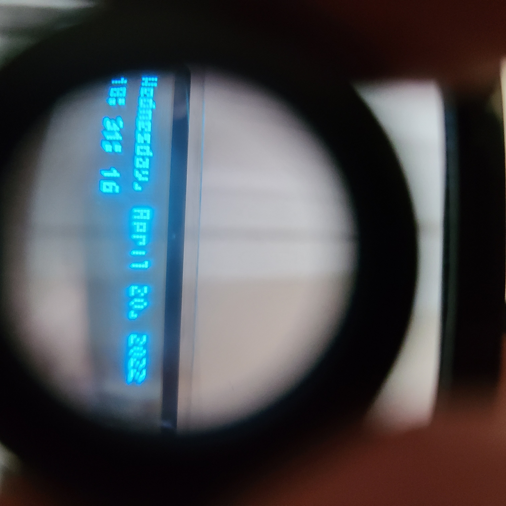

About the Project
This is a personal project inspired by the E.D.I.T.H. glasses featured in Spider-Man: No Way Home. The project uses a LilyGo TTV development board, which features an ESP32 microcontroller and a transparent OLED display. The display is programmable using the Arduino development environment.
This project is currently a work in progress. The current implementation displays the date and time on the transparent OLED screen, with plans to add weather information in future iterations.
One of the main challenges with the device is that the displayed text cannot be viewed clearly when the glasses are worn because the display is positioned too close to the user's eyes. A convex lens is therefore needed to make the text appear as though it is being displayed at a greater distance. With further development, a fully implemented version could potentially be used as a heads-up display for applications such as GPS navigation.
